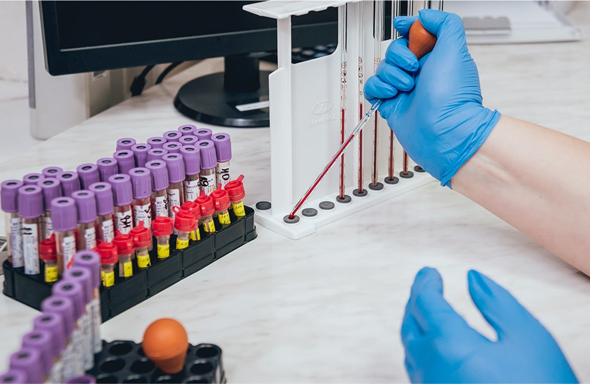

西鉄天神駅から徒歩1分！ 19時まで受付！
西鉄天神駅から徒歩1分！ 19時まで受付！
-
0120-133-220
受付 10:00～19:00 不定休
telephone -
アクセス
access -
来院予約
reservation -
お問合わせ
mail
VENEREAL EXAMINATION 性病検査
性病とは？
性病とは、性的な行為によって感染する病気の総称です。性的な行為には、
性交だけでなく、粘膜接触を含みます。
発症すると、尿道炎や膿などのように、体に異常が現れる場合もありますが、自覚症状が無いケースも少なくありません。
自身が感染したことに気づかないまま他の人との性的接触を重ねていると、感染を広げてしまうことにもなりかねません。
感染を広めない為に、ご自身の体の為にも思い当たる節がある場合は、早めの検査をお勧め致します。
性病の症状
-
皮膚の症状
男女共通：感染した箇所にしこりができる、リンパ節のはれ、肛門周辺や性器などにイボ、感染部の激しいかゆみ
- 主な病名
- 梅毒・ヘルペス・尖圭コンジローマ・ケジラミ症など
-
喉の症状
男女共通：のどに腫れや痛みがあり、風邪のような症状
- 主な病名
- クラミジア・淋病など
-
尿道や膣の症状
男性：尿道のかゆみや不快感、排尿時の軽い痛み、尿道から膿がでる
副睾丸の腫れ、軽い発熱や痛み女性：おりものの増加、生理以外の出血（不正出血）下腹部の痛み、
性交時の痛み外陰部や腟の強いかゆみ- 主な病名
- クラミジア・淋病・トリコモナス・カンジダなど
-
全身に出る症状
肝炎：感染した箇所にしこりができる、リンパ節のは
れ、肛門周辺や性器などにイボ、感染部の激し
いかゆみHIV：免疫力の低下による影響で病原性の弱い細菌や
ウイルスなどの日和見感染を起こす。- 主な病名
- HIV感染症(エイズ)・A型肝炎・B型肝炎・C型肝炎
-
通常検査
結果報告 5〜7日明らかな症状がある場合は、専門機関による通常検査をおすすめします。例えば、膿が出ている、おしっこをする時に強い痛みがある、性器がかゆい、熱があるなど、明らかな症状を感じている場合など、クイック検査では分からない、詳細な診断が可能となります。重病の発見が遅くなる前にご自身のお体の状態を把握し適切な治療に繋げることができます。
- 検査料金
- お問合せ下さい
 -
クイック検査
結果報告 即日 20〜30分現在症状が出ていなくても、不安な行為があった。性病に感染したかもしれないとお心当たりのある方はクイック検査がおすすめです。
即日で検査結果がわかるので、早めの対処が
可能になります。- 検査料金
- お問合せ下さい